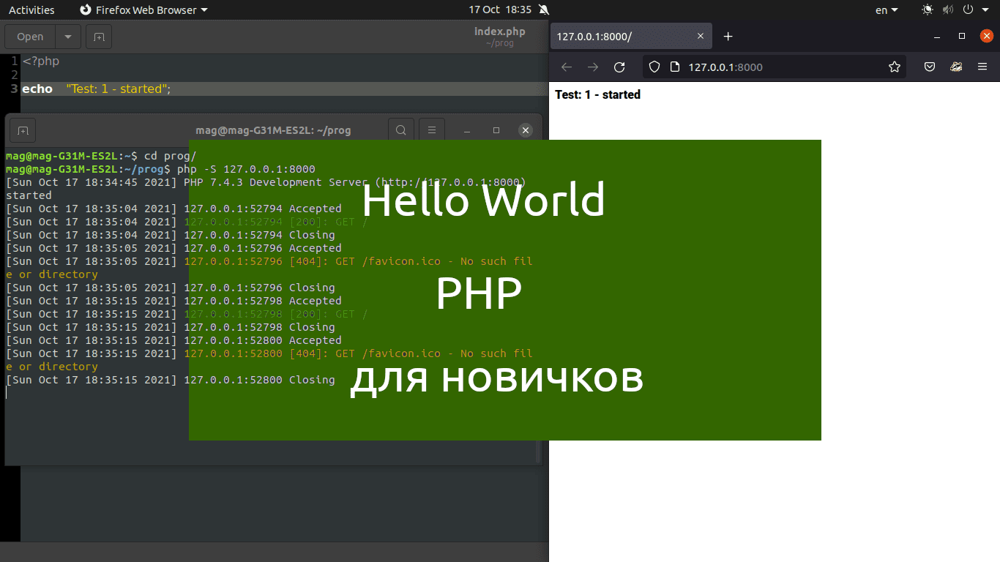

Hello World на PHP
Из этой статьи вы узнаете как написать программу, которая выводит сообщение "Hello, world" на языке программирования - PHP.
Тема далеко не нова, но все же у многих возникают трудности при написании этой программы.
Все действия протестированы и проверены на дистрибутиве Ubuntu.
В статье есть видео, в которых всё показано в живую.
Приятного чтения и просмотра!
Тема далеко не нова, но все же у многих возникают трудности при написании этой программы.
Все действия протестированы и проверены на дистрибутиве Ubuntu.
В статье есть видео, в которых всё показано в живую.
Приятного чтения и просмотра!

Подготовка
- Шаг 1
-
Открываем терминал:
"Ctrl+Alt+T" или "ПКМ, открыть Терминал" (по англ. - Open in Terminal). - Шаг 2
-
Создадим отдельный каталог (папку):
mkdir prog
Теперь зайдем в него:
cd prog
Мы создали пустой каталог и зашли в него.
"mkdir" - создать пустой каталог
"cd" - используется для перемещения по каталогам - Шаг 3
-
В этой папке создадим файл "index.php":
touch index.php
Убидимся, что файл создался:
ls"touch" - создать файл
"ls" - просмотр текущего каталога - Шаг 4
-
Теперь нужно открыть файл в любой текстовом редакторе.
К примеру открою наш файл "index.php" в текстовом редакторе - gedit. -
Нажимаем "Ctrl+Shift+T", для того, чтобы открыть новую вкаладку в терминале.
Теперь вводим следующую команду:
gedit index.php & exit
Откроется "текстовой редактор - gedit" и закроется одна вкладка в терминале.
Пишем код
-
Пишите код строчка за строчкой:
<?php
Далее пишем наше сообщение - Hello World:
echo "Hello World";
Запуск в терминале
-
Чтобы все заработало нам понадобиться вот такая программа:
sudo apt install php7.4-cli
Если она у Вас уже есть, то идем дальше. -
Переходим в наш терминал и там пишем следующее:
php -S 127.0.0.1:8000
На экране появиться, что то вроде:
[Sep Jan 1 12:44:11 2022] PHP 7.4.3 Development Server (http://127.0.0.1:8000) started
Смотрим результат в браузере
-
Открываем любой браузер.
Пишем в адресной строке следующее:
127.0.0.1:8000
Нажмите "Enter"
Если все сделано правильно то вы увидете надпись - Hello World
Заключение
-
В данной статье была расмотрена программа выводящая сообщение "Hello, world" на языке программирования PHP.
Мы создали файл, написали код, запустили программу php, просмотрели index.php в браузере.
Надеюсь, статья была полезной и у вас получилось найти ответы на свои вопросы.
НОВОСТИ
|